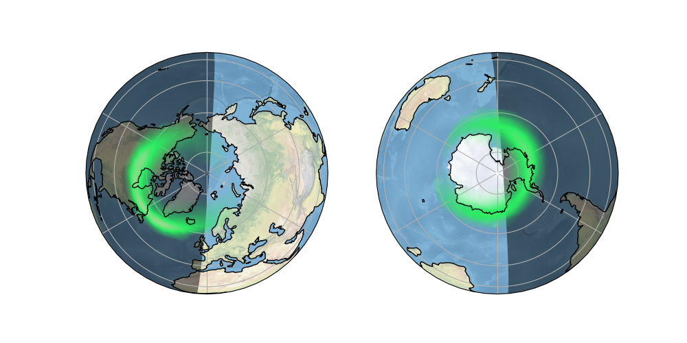

Note
Click here to download the full example code
Plotting the Aurora Forecast from NOAA on Orthographic Polar Projection¶
The National Oceanic and Atmospheric Administration (NOAA) monitors the solar wind conditions using the ACE spacecraft orbiting close to the L1 Lagrangian point of the Sun-Earth system. This data is fed into the OVATION-Prime model to forecast the probability of visible aurora at various locations on Earth. Every five minutes a new forecast is published for the coming 30 minutes. The data is provided as a 1024 by 512 grid of probabilities in percent of visible aurora. The data spaced equally in degrees from -180 to 180 and -90 to 90.
from datetime import datetime
from io import StringIO
from urllib.request import urlopen
import numpy as np
import cartopy.crs as ccrs
from cartopy.feature.nightshade import Nightshade
import matplotlib.pyplot as plt
from matplotlib.colors import LinearSegmentedColormap
def aurora_forecast():
"""
Get the latest Aurora Forecast from https://www.swpc.noaa.gov.
Returns
-------
img : numpy array
The pixels of the image in a numpy array.
img_proj : cartopy CRS
The rectangular coordinate system of the image.
img_extent : tuple of floats
The extent of the image ``(x0, y0, x1, y1)`` referenced in
the ``img_proj`` coordinate system.
origin : str
The origin of the image to be passed through to matplotlib's imshow.
dt : datetime
Time of forecast validity.
"""
# GitHub gist to download the example data from
url = ('https://gist.githubusercontent.com/belteshassar/'
'c7ea9e02a3e3934a9ddc/raw/aurora-nowcast-map.txt')
# To plot the current forecast instead, uncomment the following line
# url = 'https://services.swpc.noaa.gov/text/aurora-nowcast-map.txt'
response_text = StringIO(urlopen(url).read().decode('utf-8'))
img = np.loadtxt(response_text)
# Read forecast date and time
response_text.seek(0)
for line in response_text:
if line.startswith('Product Valid At:', 2):
dt = datetime.strptime(line[-17:-1], '%Y-%m-%d %H:%M')
img_proj = ccrs.PlateCarree()
img_extent = (-180, 180, -90, 90)
return img, img_proj, img_extent, 'lower', dt
def aurora_cmap():
"""Return a colormap with aurora like colors"""
stops = {'red': [(0.00, 0.1725, 0.1725),
(0.50, 0.1725, 0.1725),
(1.00, 0.8353, 0.8353)],
'green': [(0.00, 0.9294, 0.9294),
(0.50, 0.9294, 0.9294),
(1.00, 0.8235, 0.8235)],
'blue': [(0.00, 0.3843, 0.3843),
(0.50, 0.3843, 0.3843),
(1.00, 0.6549, 0.6549)],
'alpha': [(0.00, 0.0, 0.0),
(0.50, 1.0, 1.0),
(1.00, 1.0, 1.0)]}
return LinearSegmentedColormap('aurora', stops)
def main():
fig = plt.figure(figsize=[10, 5])
# We choose to plot in an Orthographic projection as it looks natural
# and the distortion is relatively small around the poles where
# the aurora is most likely.
# ax1 for Northern Hemisphere
ax1 = fig.add_subplot(1, 2, 1, projection=ccrs.Orthographic(0, 90))
# ax2 for Southern Hemisphere
ax2 = fig.add_subplot(1, 2, 2, projection=ccrs.Orthographic(180, -90))
img, crs, extent, origin, dt = aurora_forecast()
for ax in [ax1, ax2]:
ax.coastlines(zorder=3)
ax.stock_img()
ax.gridlines()
ax.add_feature(Nightshade(dt))
ax.imshow(img, vmin=0, vmax=100, transform=crs,
extent=extent, origin=origin, zorder=2,
cmap=aurora_cmap())
plt.show()
if __name__ == '__main__':
main()
Total running time of the script: ( 0 minutes 5.691 seconds)